MARLI
Šta je novo u aplikaciji — sa snimcima ekrana i kratkim uputstvom.
What's new in the app — with screenshots and short how-tos.
1.99 Računar: pretraga svega i tuner sa straneComputer: search everything and tuner at the side 11. 11. 2026.
Gore u traci je „Pretraži sve…“ (ili pritisni Ctrl K). Jedna pretraga nalazi pesme (po naslovu, izvođaču i po tekstu), set liste, Moje vežbe, igre, delove aplikacije, podešavanja i učenike. ↑ ↓ biraju, Enter otvara, Esc zatvara.
In the top bar there is “Search everything…” (or press Ctrl K). One search finds songs (by title, artist and lyrics), set lists, My exercises, games, app sections, settings and students. ↑ ↓ choose, Enter opens, Esc closes.
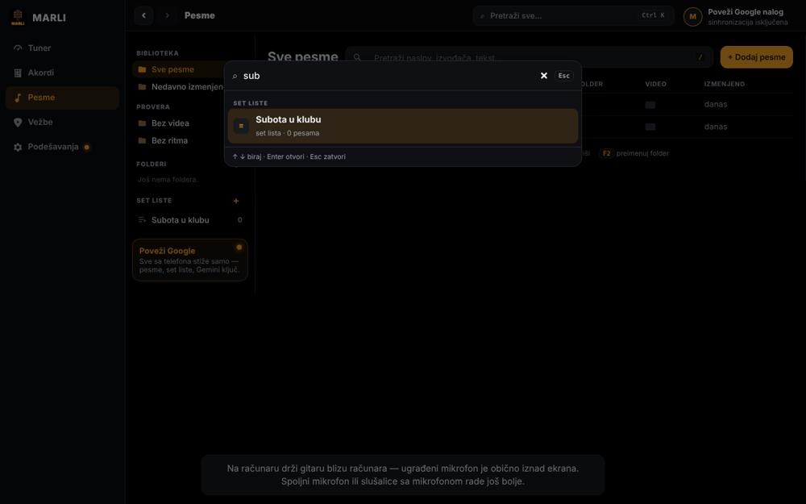
Dugme klizača na tuneru otvara podešavanja (štimovanje, soba, A4) kao panel desno, bez zatamnjenja — tuner radi dok menjaš. Sam tuner je isti.
The sliders button on the tuner opens its settings (tuning, room, A4) as a panel on the right, without dimming — the tuner keeps working while you change things. The tuner itself is unchanged.
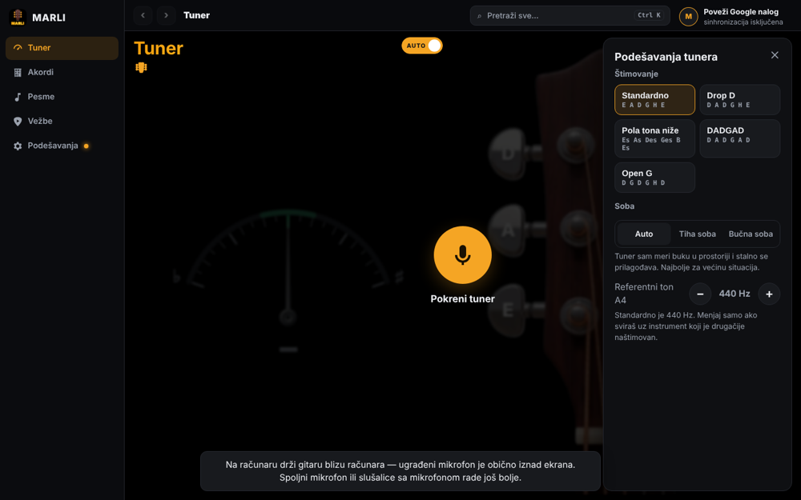
Igre su sada 4 u redu, pa se sve vide bez skrolovanja.
Games are now 4 per row, so all of them are visible without scrolling.
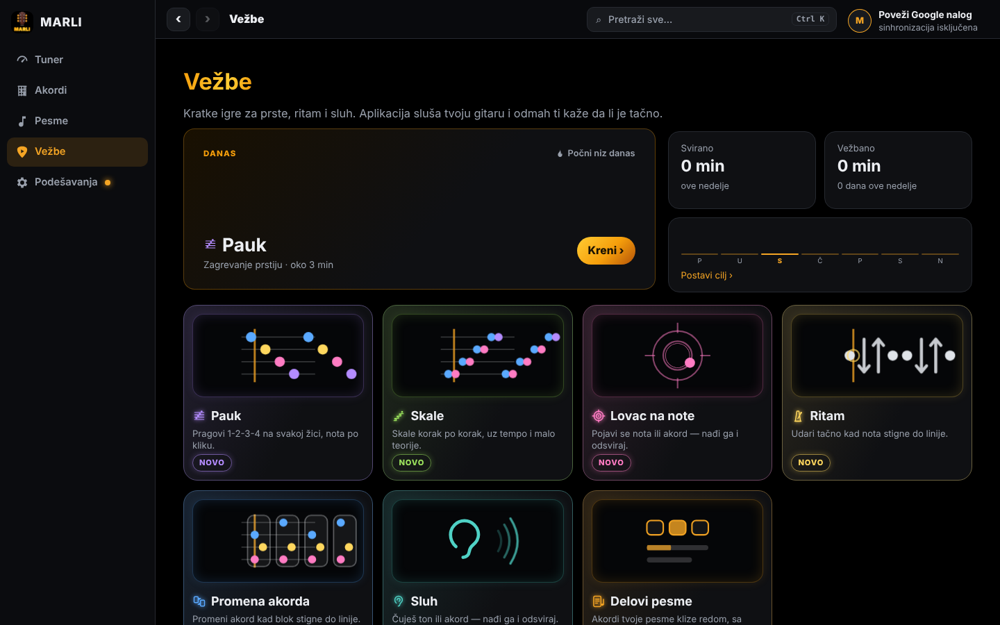
1.98.1 Ispravka: donje trake na računaruFix: bottom bars on the computer 11. 11. 2026.
Traka sa dugmetom „Počni“ u vežbama, traka „Osveži“ i poziv za instalaciju sada počinju desno od bočne trake, pa se opis vežbe (npr. „Em ↔ G · ½ takta · Samo na 1 …“) više ne seče.
The “Start” bar in practice, the “Refresh” bar and the install prompt now start to the right of the side bar, so the exercise summary (e.g. “Em ↔ G · ½ bar · Only on 1 …”) is no longer cut off.
1.98 Računar: bočna traka i dugme nazadComputer: side bar and back button 11. 11. 2026.
Delovi aplikacije (Učenici, Tuner, Akordi, Pesme, Vežbe, Podešavanja) su sada u bočnoj traci levo — uvek jednim klikom, sa bilo kog mesta. Gore je traka sa ‹ › nazad / napred i putanjom (npr. Pesme › Subota u klubu › Lane moje); klik na deo putanje vodi tamo. Na ekranu pesme bočna traka se skupi u ikone, da tekst ima više mesta. Zvonce i nalog su gore desno.
The app sections (Students, Tuner, Chords, Songs, Practice, Settings) are now in a side bar on the left — always one click away, from anywhere. At the top is a bar with ‹ › back / forward and the path (e.g. Songs › Saturday gig › Lane moje); click part of the path to go there. On a song the side bar shrinks to icons so the lyrics get more room. The bell and your account are at the top right.
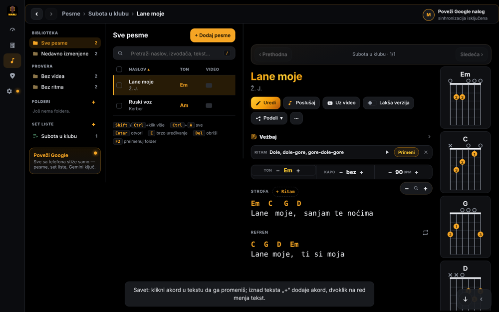
Instalirana aplikacija na Windows-u nema dugme nazad pregledača — zato je ‹ uvek vidljivo. Uz to: Esc ili Backspace vraća korak nazad sa pesme ili set liste (kad nije otvoren prozorčić i ne kucaš), Alt + ← / → i bočni tasteri miša rade nazad / napred, a naslov prozora pokazuje gde si (vidi se i na traci zadataka).
The installed app on Windows has no browser back button — so ‹ is always visible. Also: Esc or Backspace goes one step back from a song or set list (when no dialog is open and you are not typing), Alt + ← / → and the mouse side buttons go back / forward, and the window title shows where you are (also on the taskbar).

Na ekranu pesme na tabletu vraćena je lupa − 🔍 + pored teksta — veličina teksta jednim dodirom. Štipanje i dalje radi.
On the tablet song screen the − 🔍 + magnifier is back next to the lyrics — text size in one tap. Pinching still works.
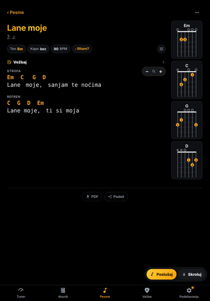
1.97 Moja vežba: ritam i sačuvane vežbeMy exercise: rhythm and saved exercises 11. 11. 2026.
U Promeni akorda izaberi Ritam: „Samo na 1“ (udari na promenu, kao do sada) ili obrazac udaranja — folk, pop, rok, balada, rege, kantri… Uključi „Ritam po akordu“ i svaki akord dobija svoj obrazac (npr. Em samo četvrtine nadole). MARLI proverava akord na prvom udarcu, a ostale udarce na vreme.
In Chord changes pick a Rhythm: “Only on 1” (strum on the change, as before) or a strumming pattern — folk, pop, rock, ballad, reggae, country… Turn on “Rhythm per chord” and each chord gets its own pattern (e.g. Em only quarter downstrokes). MARLI checks the chord on the first strum and the other strums for timing.
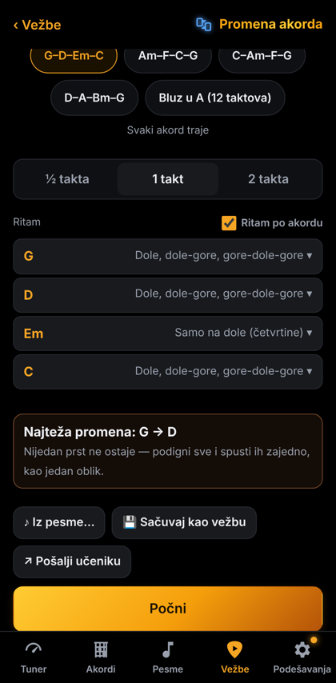
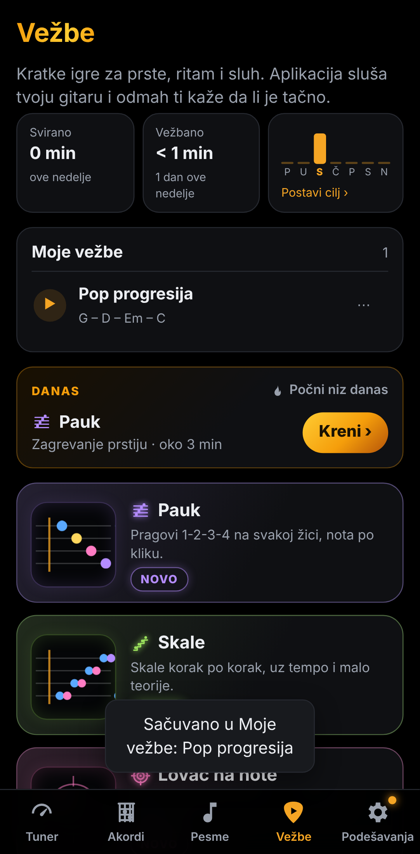
„Sačuvaj kao vežbu“ pamti niz, trajanja i ritam pod imenom — vežba je na vrhu Vežbi i na svim tvojim uređajima (sinhronizacija). „Iz pesme…“: izaberi pesmu i deo (strofu, refren) — akordi tog dela postaju niz.
“Save as exercise” keeps the sequence, lengths and rhythm under a name — the exercise is at the top of Practice and on all your devices (sync). “From a song…”: pick a song and a part (verse, chorus) — its chords become the sequence.
„Pošalji učeniku“ (u Promeni akorda ili ⋯ kod vežbe): izaberi učenike i cilj (1, 3 ili 5 čistih rundi na izabranom tempu). Učenik je dobije sam u Moje vežbe, uz 🔔, bez poruka. Može da uspori dok vežba; ako je izmeni, čuva se kao „moja kopija“, a tvoja ostaje ista.
“Send to a student” (in Chord changes or ⋯ on an exercise): pick students and a goal (1, 3 or 5 clean rounds at the chosen tempo). The student gets it automatically in My exercises, with a 🔔, no messages. They can slow down while practising; if they change it, it is saved as “my copy” and yours stays the same.
1.96 Promena akorda: bilo koji akordiChord changes: any chords 11. 11. 2026.
Više nije samo par akorda: pravi niz od koliko god akorda, redom. Dodirni akord da ga promeniš, ukloniš ili mu promeniš trajanje (½, 1 ili 2 takta). „+ akord“: kucaj bilo koji akord — predlozi se pojavljuju dok kucaš — ili izaberi iz tona (u G: G Am Hm C D Em) ili iz svojih pesama. Gotovi nizovi su tu: parovi za početnike, G–D–Em–C, Am–F–C–G, C–Am–F–G, D–A–Hm–G i bluz u A (12 taktova).
It is no longer just a pair: build a sequence of as many chords as you like, in order. Tap a chord to change it, remove it or change its length (½, 1 or 2 bars). “+ chord”: type any chord — suggestions appear as you type — or pick from the key (in G: G Am Bm C D Em) or from your songs. Ready-made sequences: beginner pairs, G–D–Em–C, Am–F–C–G, C–Am–F–G, D–A–Bm–G and a 12-bar blues in A.
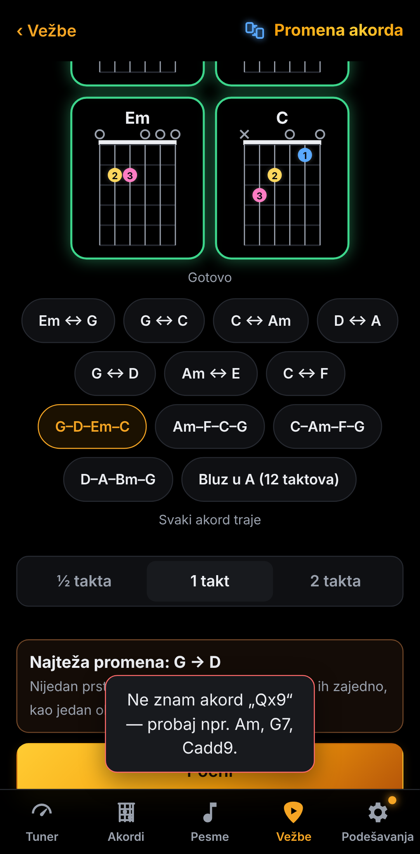
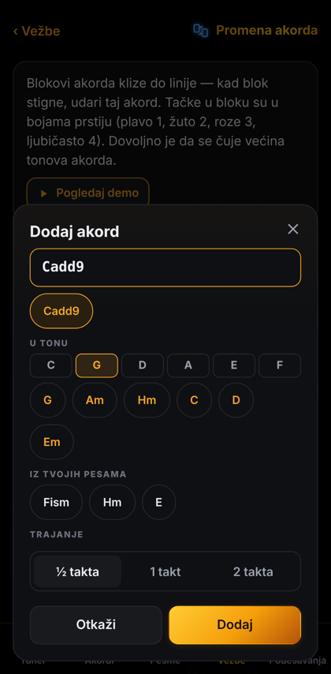
Najteža promena je označena, uz savet (koji prst ostaje na mestu, kako postaviti barre). Posle runde vidiš koja promena ti je bila najsporija, i jednim dodirom vežbaš samo nju.
The hardest change is marked, with a tip (which finger stays put, how to place a barre). After a round you see which change was slowest for you, and practise only that one with a single tap.
U „Predloži vežbu“ za Promenu akorda izaberi gotov niz ili upiši svoj („G Hm Em7 C“), sa ciljem. Učenik ga dobije sam (bez poruka) i u Vežbama mu se otvara baš taj niz.
In “Suggest practice” for Chord changes pick a ready-made sequence or type your own (“G Bm Em7 C”), with a goal. The student gets it automatically (no messages) and it opens exactly that sequence in Practice.
1.95 Obaveštenja 🔔Notifications 🔔 10. 11. 2026.
Kad si nastavnik ili si povezan sa nastavnikom, gore desno je zvonce sa brojem novih stvari (na telefonu na Pesmama, Vežbama, Učenicima i Od nastavnika; na računaru pored naloga). Učenik vidi pesme, set liste, plan i odgovore od nastavnika; nastavnik vidi želje, snimke, „Proveri pesmu“, urađene zadatke i ko se povezao. Dodir na stavku otvara tačno to mesto; „Označi sve kao pročitano“ briše broj.
When you are a teacher or connected to one, there is a bell at the top right with the number of new things (on phones on Songs, Practice, Students and From teacher; on a computer next to your account). Students see songs, set lists, plans and answers from the teacher; teachers see wishes, recordings, “Check song”, finished tasks and who connected. Tapping an item opens exactly that place; “Mark all as read” clears the number.
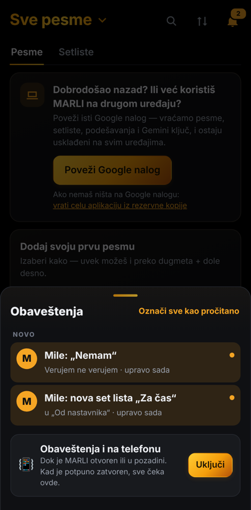
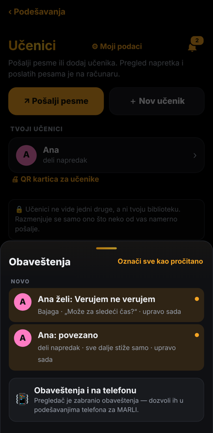
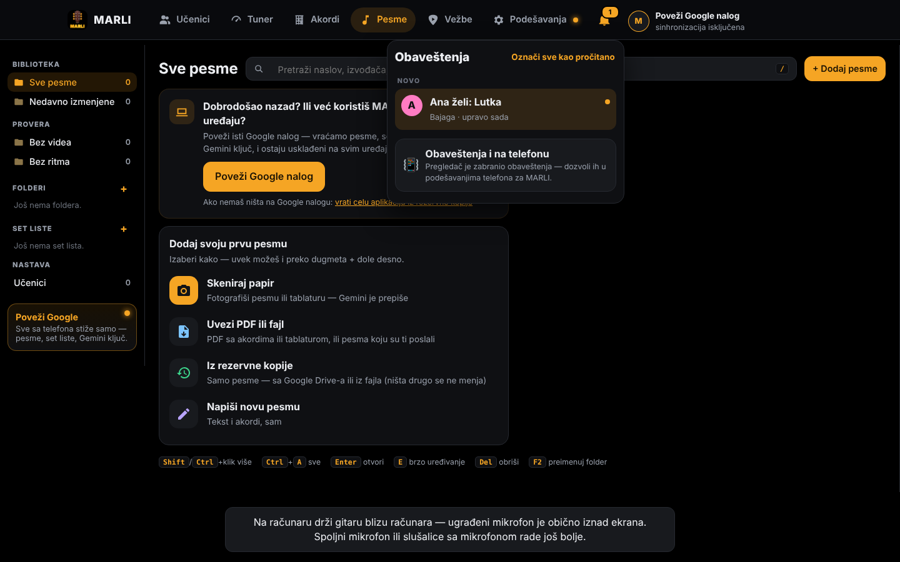
U Obaveštenjima dodirni „Uključi“ da stižu i kao obaveštenje telefona — dok je MARLI otvoren ili u pozadini. MARLI nema svoj server (sve je na tvom Google Drive-u), pa kad je aplikacija potpuno zatvorena, sve sačeka u zvoncu do sledećeg otvaranja.
In Notifications tap “Turn on” to also get phone notifications — while MARLI is open or in the background. MARLI has no server of its own (everything is in your Google Drive), so when the app is fully closed, everything waits in the bell until you open it.
1.94.1 Akord posle kraja redaChord after the end of a line 10. 11. 2026.
Neki akordi se sviraju posle poslednje reči u redu (na kraju takta). U „Uredi akorde“ (⋯ → Uredi akorde, ili dug pritisak na akord) sada: dodirni desno od kraja reda → „+ Dodaj akord“, ili prevuci akord preko kraja reda — lupa pokazuje gde staje. I ▶ pomera akord dalje od kraja.
Some chords are played after the last word of a line (at the end of a bar). In “Edit chords” (⋯ → Edit chords, or long-press a chord) you can now tap to the right of the line’s end → “+ Add chord”, or drag a chord past the end — the magnifier shows where it lands. ▶ also moves a chord past the end.
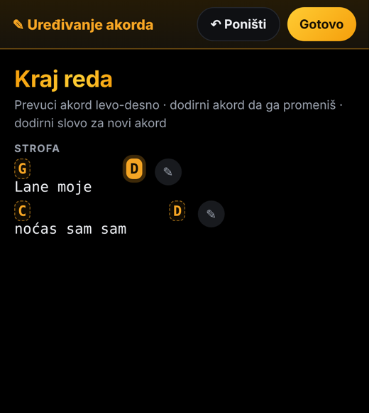
1.94 Nastava bez porukaTeaching without messages 10. 11. 2026.
Nastavnik pokaže QR za povezivanje, učenik ga skenira i dodirne „Prihvati i poveži Google“ („Deli napredak“ je uključeno). Zatim učenik pokaže svoj QR nastavniku — i to je sve. Za časove preko interneta: „Nismo zajedno? Kopiraj link“.
The teacher shows the QR to connect, the student scans it and taps “Accept and connect Google” (“Share progress” is on). Then the student shows their own QR to the teacher — that’s it. For online lessons: “Not together? Copy link”.
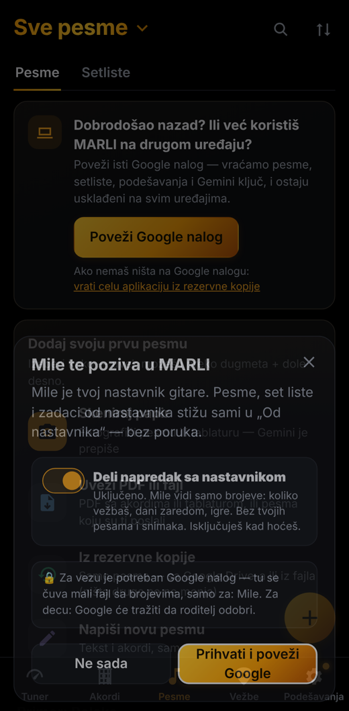
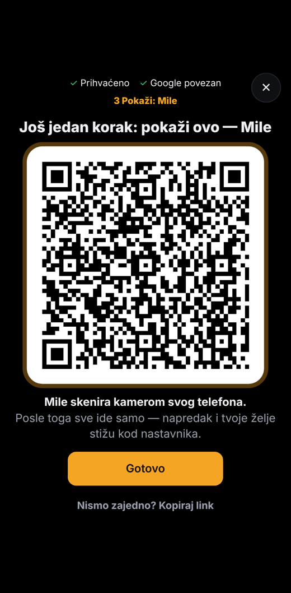
Pesme, set liste, odgovori i plan od nastavnika stižu pravo u „Od nastavnika“ (gore, „Novo od…“). „Sačuvaj u…“ stavlja pesmu u bilo koji folder ili set listu. Želje, „Imaš li ovu pesmu?“, „Proveri sa nastavnikom“ i snimci stižu nastavniku sami — nema više imejla ni Vibera.
Songs, set lists, answers and the plan from the teacher go straight into “From teacher” (top, “New from…”). “Save to…” puts a song in any folder or set list. Wishes, “Do you have this song?”, “Check with teacher” and recordings reach the teacher by themselves — no more email or Viber.
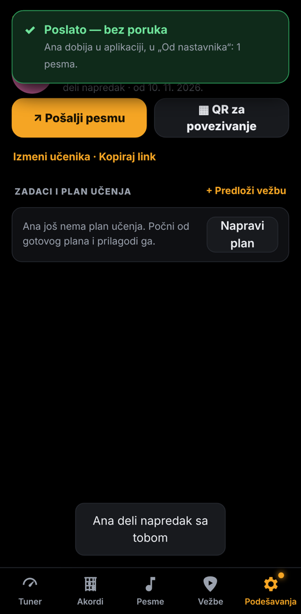
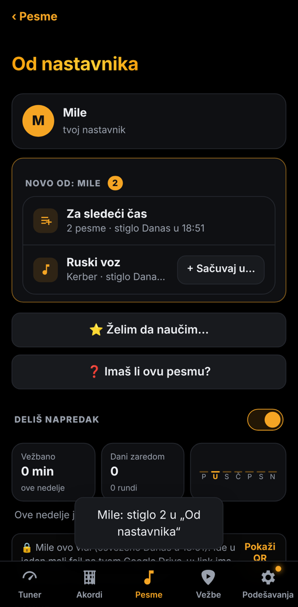
Potreban je Google nalog (tu se čuva mali fajl sa brojevima, samo za nastavnika). Za decu Google traži da roditelj odobri — MARLI kaže tačno šta treba uraditi, pa „Pokušaj ponovo“. Ko je napredak slao porukom, vidi karticu „Poveži Google“. Učenici povezani pre 1.94 treba jednom da skeniraju novi QR.
A Google account is needed (it keeps a small file with numbers, only for the teacher). For kids Google asks a parent to approve — MARLI says exactly what to do, then “Try again”. Anyone who sent progress by message sees a “Connect Google” card. Students connected before 1.94 need to scan the new QR once.
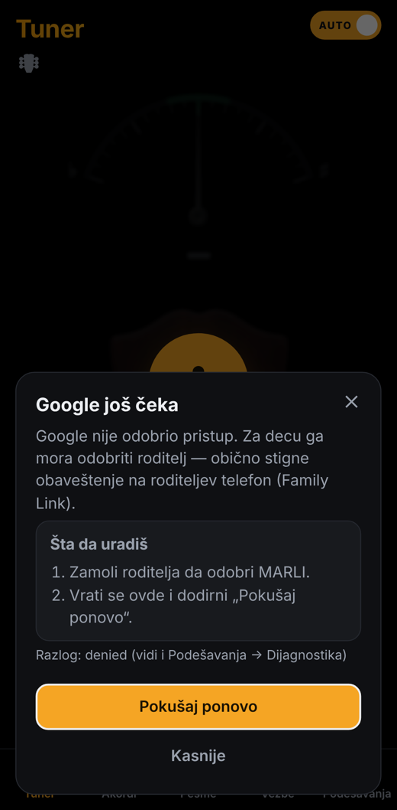
1.93 Pouzdanije čuvanjeMore reliable saving 10. 11. 2026.
Telefon ponekad sam zatvori bazu podataka aplikacije (posle dugog rada u pozadini). MARLI je do sada nastavljao sa zatvorenom vezom, pa čuvanje nije uspevalo dok se aplikacija ne pokrene ponovo. Sada se veza odmah sama ponovo otvori i čuvanje se ponovi.
The phone sometimes closes the app’s database on its own (after a long time in the background). MARLI used to keep using the closed connection, so saving failed until the app was restarted. Now the connection reopens by itself and the save is retried.
Dijagnostika je mirnija: bezopasno upozorenje pregledača („ResizeObserver“) se više ne beleži, a ako se Google prijava ne učita bez interneta, aplikacija se i dalje normalno pokreće.
Diagnostics are quieter: a harmless browser warning (“ResizeObserver”) is no longer logged, and if Google sign-in can’t load without internet, the app still starts normally.
„Podeli MARLI“ (Podešavanja, gore desno): QR kod je na telefonu izlazio iz okvira — ispravljeno.
“Share MARLI” (Settings, top right): the QR code spilled out of its frame on phones — fixed.
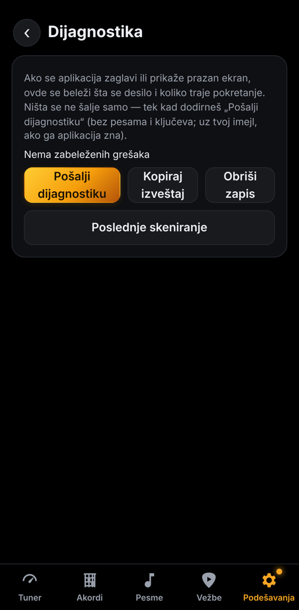
1.92 Nastava: QR pozivnica i slanje više pesamaTeaching: QR invite and sending several songs 10. 11. 2026.
Kad uključiš „Ja sam nastavnik“, u Podešavanja → Nastava se pojavi red Učenici. Tu su dve stvari: „Pošalji pesme“ (označi više pesama → izaberi učenike → pošalji; svako dobija svoju poruku) i „+ Nov učenik“. Na stranici učenika: „Pošalji pesmu“, QR za povezivanje i plan učenja, gde označavaš nedelju na času. Pregled napretka i brisanje su na računaru.
When you turn on “I am a teacher”, a Students row appears in Settings → Teaching. It has two things: “Send songs” (tick several songs → pick students → send; each gets their own message) and “+ New student”. On a student’s page: “Send a song”, QR to connect and the learning plan, where you mark the week during the lesson. Progress overview and deleting are on the computer.
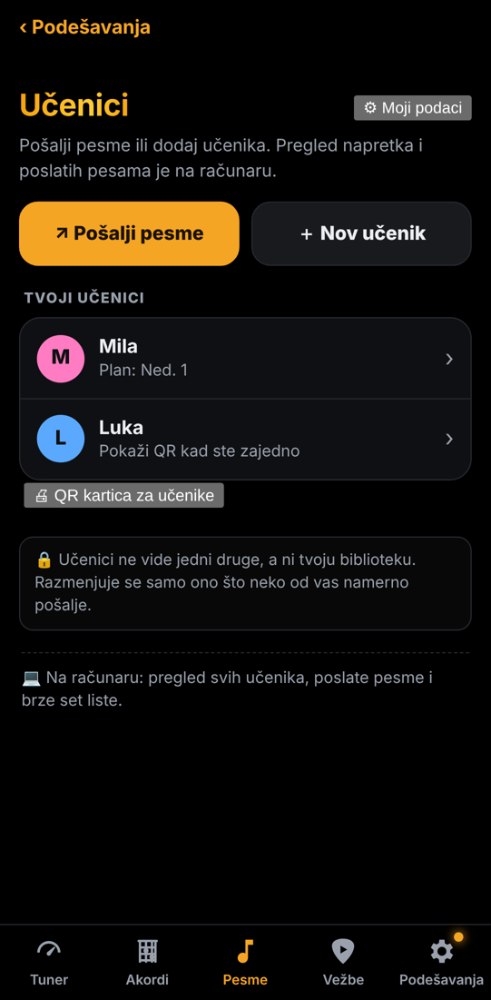
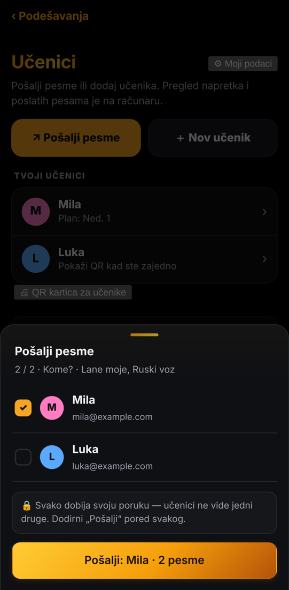
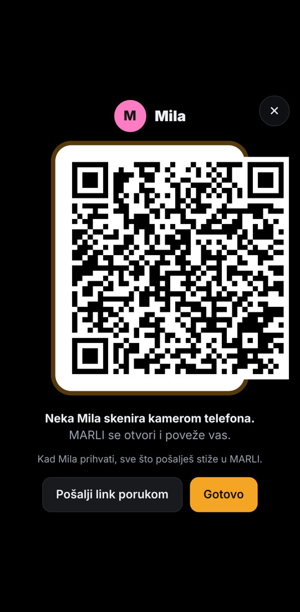
QR pozivnica: kad ste zajedno, učenik skenira QR kamerom telefona i MARLI odmah nudi „Prihvati“. Pozivnica porukom i dalje radi.
QR invite: when you are together, the student scans the QR with the phone camera and MARLI offers “Accept” right away. The invite by message still works.
U pregledu Učenika nova kartica „Poslate pesme“: svaka poslata pesma, kome i kad, filter po učeniku i „Ovaj mesec“. Označi pesme i jednim klikom „Napravi set listu“, „Pošalji drugom učeniku“ ili „Sve poslato: Mila“. „Moji podaci“ menjaju ime i kontakt koje učenici vide.
The Students overview has a new “Sent songs” card: every song sent, to whom and when, filter by student and “This month”. Tick songs and in one click “Make a set list”, “Send to another student” or “All sent: Mila”. “My details” changes the name and contact students see.
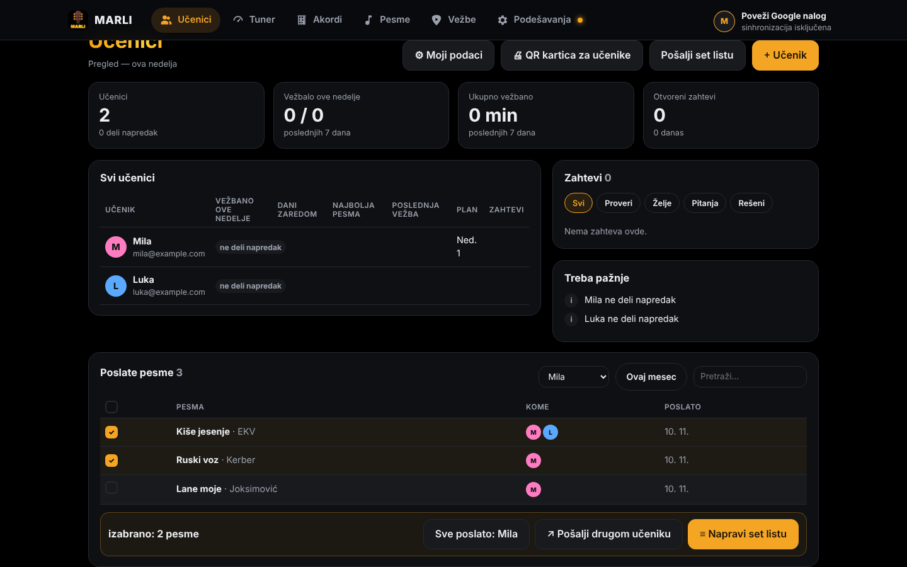
Pesme poslate pre ove verzije se ne vide pojedinačno (aplikacija tada nije pamtila koja pesma); set liste se vide.
Songs sent before this version aren’t listed one by one (the app didn’t record which song then); set lists are.
1.91 Lakša verzija na pravom mestuEasier version where you look for it 10. 11. 2026.
„Lakša verzija“ je sada i u „Podešavanjima pesme“ (dodir na Ton · Kapo · BPM ispod naslova) — prekidač odmah ispod Kapodastera. Uključi ga i MARLI stavi kapodaster tamo gde su hvatovi najlakši, a zvuk ostaje isti (npr. pesma u F → kapo 3, samo D, Hm, G, A). Isključi ga za originalne akorde.
“Easier version” is now also in “Song settings” (tap Key · Capo · BPM under the title) — a switch right under Capo. Turn it on and MARLI puts the capo where the shapes are easiest, with the same sound (e.g. a song in F → capo 3, only D, Bm, G, A). Turn it off for the original chords.
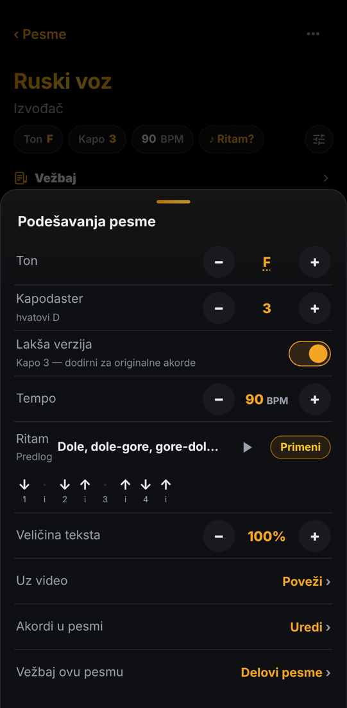
U meniju „⋯“ je „Poslušaj“ preimenovano u „Snimak sa YouTube-a“, da se ne meša sa dugmetom „Poslušaj“ koje pušta pesmu zvukom gitare.
In the “⋯” menu, “Listen” is now “YouTube recording”, so it isn’t confused with the “Listen” button that plays the song on guitar.
1.90 Brže na starijim telefonimaFaster on older phones 10. 11. 2026.
Proverili smo aplikaciju kao na sporom telefonu (procesor 6× sporiji). Sve važno radi brzo — tuner spreman za ~0,3 s, spisak od 150 pesama za ~0,5 s, „Poslušaj“ svira glatko (60 sličica u sekundi). Našli smo i ispravili jednu stvar koja je usporavala dugo korišćenje: svaka otvorena pesma je ostajala u memoriji. Sada memorija ostaje ista koliko god pesama otvoriš — važno na nastupu sa celom set listom.
We tested the app as on a slow phone (CPU 6× slower). Everything important is fast — tuner ready in ~0.3 s, a list of 150 songs in ~0.5 s, “Listen” plays smoothly (60 frames per second). We found and fixed one thing that slowed down long use: every opened song stayed in memory. Now memory stays the same no matter how many songs you open — important at a gig with a whole set list.
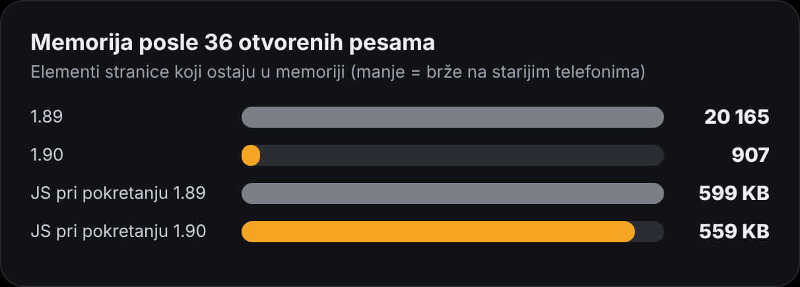
Telefon i tablet pri pokretanju više ne učitavaju upravljač biblioteke za računar (40 KB manje). Kvalitet zvuka i izgled su isti.
Phones and tablets no longer load the computer library manager at startup (40 KB less). Sound quality and look are unchanged.
1.89 Akordi prstomChords by finger 10. 11. 2026.
Isto brzo uređivanje kao na računaru, sada prstom. Otvara se iz „⋯“ ili „Podešavanja pesme“ → „Uredi akorde“, ili dugim pritiskom na akord. Gore je zlatna traka sa Poništi i Gotovo, a akordi dobiju isprekidan okvir — dok čitaš pesmu, ništa se ne može slučajno promeniti.
The same quick editing as on a computer, now by finger. Open it from “⋯” or “Song settings” → “Edit chords”, or long-press a chord. A gold bar at the top has Undo and Done, and chords get a dashed outline — while you just read the song, nothing can change by accident.
- Prevuci akord levo-desno: lupa iznad prsta pokazuje tačno slovo na koje pada.
- Dodir na akord → izbor odozdo: akordi iz pesme, osnova (C–H, ♯/♭), vrsta (dur, m, 7, maj7, sus4…), ◀ ▶ za pomeranje i Ukloni. ‹ › vode na prethodni/sledeći akord, a dodir na drugi akord odmah prelazi na njega — sve u jednom prolazu.
- Izabrani akord je uvek iznad izbora, i na samom kraju pesme.
- Dodir na slovo → „+ Dodaj akord“. ✎ na kraju reda ispravlja tekst.
- Drag a chord left or right: a magnifier above your finger shows exactly which letter it lands on.
- Tap a chord → a picker at the bottom: song chords, root (C–B, ♯/♭), type (major, m, 7, maj7, sus4…), ◀ ▶ to nudge and Remove. ‹ › go to the previous/next chord, and tapping another chord switches to it — all in one pass.
- The chosen chord always stays above the picker, even at the very end of the song.
- Tap a letter → “+ Add chord”. ✎ at the end of a line fixes its text.
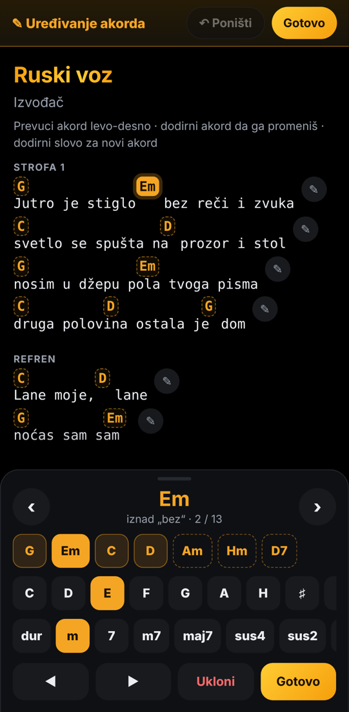
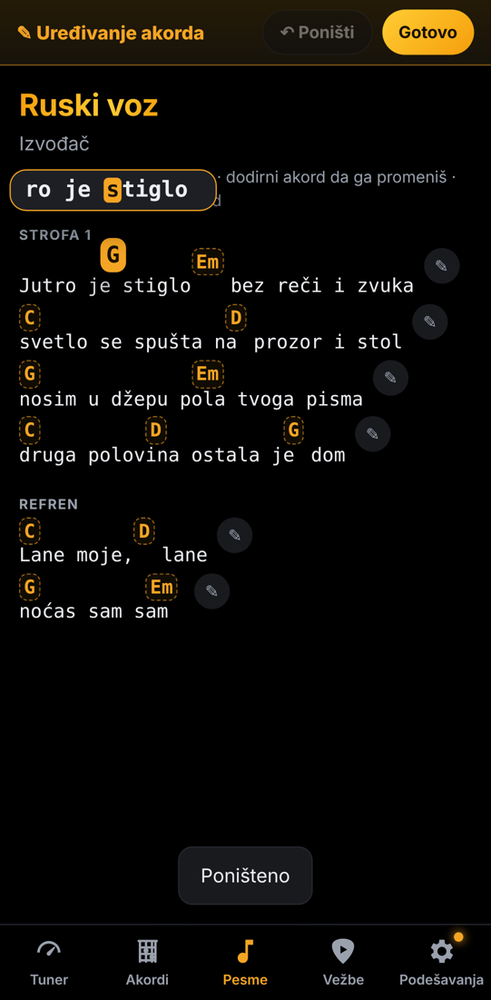
Sve se čuva odmah; „Poništi“ vraća korak po korak. Prethodna verzija pesme ostaje u „Prethodne verzije“. Računar: traka pesme sada prelazi u drugi red kad je prozor uži.
Everything saves at once; “Undo” steps back. The previous version of the song stays in “Previous versions”. Computer: the song toolbar now wraps to a second row in a narrower window.
1.88 Mirniji ekran pesmeA calmer song screen 10. 11. 2026.
Ekran pesme je sada skoro samo tekst i akordi. Ispod naslova je jedan red sa vrednostima — Ton · Kapo · BPM · ritam. Dodir na bilo koju otvara „Podešavanja pesme“: ton, kapodaster, tempo (−/+), ritam (i predlog ritma sa „Primeni“), veličina teksta, Uz video i „Vežbaj ovu pesmu“. Dugmad uz delove pesme (ritam, ponavljanje) se pojave kad dodirneš naziv dela.
The song screen is now almost only lyrics and chords. Under the title there is one line of values — Key · Capo · BPM · rhythm. Tap any of them for “Song settings”: key, capo, tempo (−/+), rhythm (and the rhythm suggestion with “Apply”), text size, play along and “Practice this song”. The buttons next to song parts (rhythm, repeat) appear when you tap the part’s name.
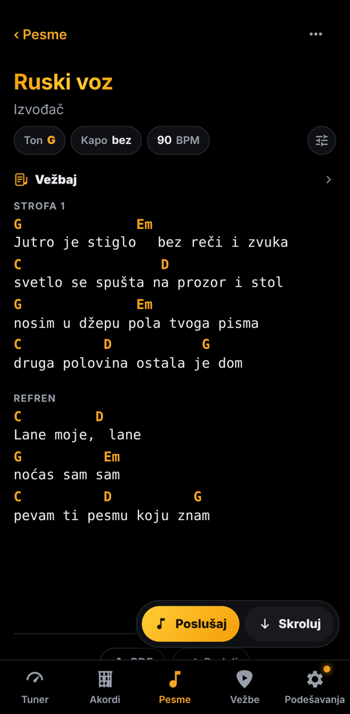
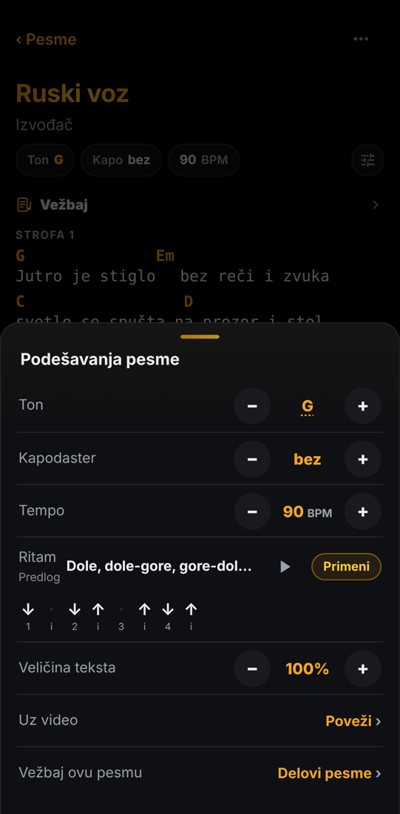
Poslušaj · Skroluj — dole desno. „Poslušaj“ pušta pesmu zvukom gitare i tekst ide sam; „Skroluj“ samo pomera tekst dok ti sviraš (dok skroluje, pojavi se i brzina). Dok pesma svira, umesto njih je mali plejer: deo pesme, vreme, tanka linija, ❚❚ i ✕. Dodir na naziv dela otvara tempo i izbor dela za ponavljanje. Trenutni red i akord su istaknuti.
Listen · Scroll — bottom right. “Listen” plays the song on guitar and the lyrics follow; “Scroll” only moves the lyrics while you play (the speed shows while scrolling). While the song plays, a mini player takes their place: the part, time, a thin progress line, ❚❚ and ✕. Tap the part name for speed and a part to repeat. The current line and chord are highlighted.
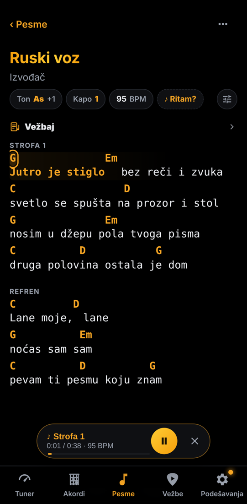
PDF i Podeli su sada mala dugmad na kraju pesme i u „⋯“.
PDF and Share are now small buttons at the end of the song and in “⋯”.
Računar: kontrole ostaju u traci; traka dobija „Poslušaj“, a „Podeli ▾“ nudi link ili PDF.
Computer: controls stay in the bar; the toolbar gets “Listen”, and “Share ▾” offers a link or PDF.
1.87 Lakše instaliranjeEasier installing 10. 11. 2026.
Instalirana aplikacija radi bez interneta, preko celog ekrana i otvara se jednim dodirom. MARLI to sada kratko predloži: posle ~20 sekundi ili posle dobrog trenutka (nova pesma, završena runda, prihvaćena pozivnica) — najviše tri puta, sa razmakom, i nikad dok sviraš ili vežbaš. Posle toga ostaje samo tanka traka i stavka u Podešavanjima. Na iPhone-u prikazuje dva koraka (Podeli → Dodaj na početni ekran).
The installed app works without internet, full screen, and opens with one tap. MARLI now briefly suggests it: after ~20 seconds or after a good moment (new song, finished round, accepted invite) — at most three times, spaced out, and never while you play or practice. After that only a slim bar and the Settings entry remain. On iPhone it shows two steps (Share → Add to Home Screen).
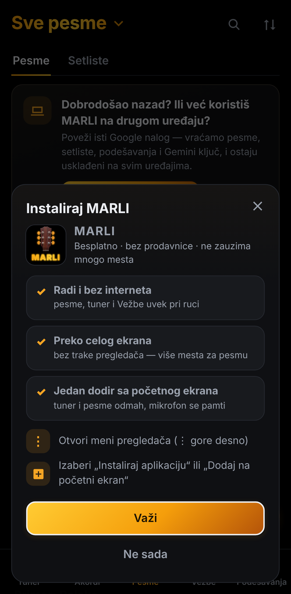
Link iz Vibera, WhatsApp-a ili Instagrama se otvara u njihovom prozoru, iz kog se aplikacija ne može instalirati — MARLI to prepozna i ponudi „Otvori u Chrome-u“ (Android) ili kratko uputstvo za Safari (iPhone).
A link from Viber, WhatsApp or Instagram opens in their own window, where the app can’t be installed — MARLI recognises it and offers “Open in Chrome” (Android) or a short guide for Safari (iPhone).
Za nastavnike: Učenici → „QR kartica za učenike“ — list za štampu (4 kartice) sa QR kodom i tri koraka.
For teachers: Students → “QR card for students” — a printable sheet (4 cards) with a QR code and three steps.
Na računaru se ništa ne nudi — instalacija je u Podešavanjima.
Nothing is suggested on computers — installing is in Settings.
1.86 Tablet, zvuk i nastava u kopijiTablet, sound and teaching in backups 9. 11. 2026.
Tablet
Tablet
Uspravno su stranice Podešavanja preko cele širine (ranije su stajale u gornjem levom uglu), tekst i razmaci su malo veći. Položeno Podešavanja izgledaju kao na računaru: spisak levo, otvorena stranica desno. „O aplikaciji“ je uredno centrirano. Telefon i računar su isti kao pre.
In portrait, Settings pages use the full width (they used to sit in the top-left corner), with slightly larger text and spacing. In landscape, Settings look like on a computer: the list on the left, the open page on the right. “About” is neatly centred. Phones and computers stay as before.
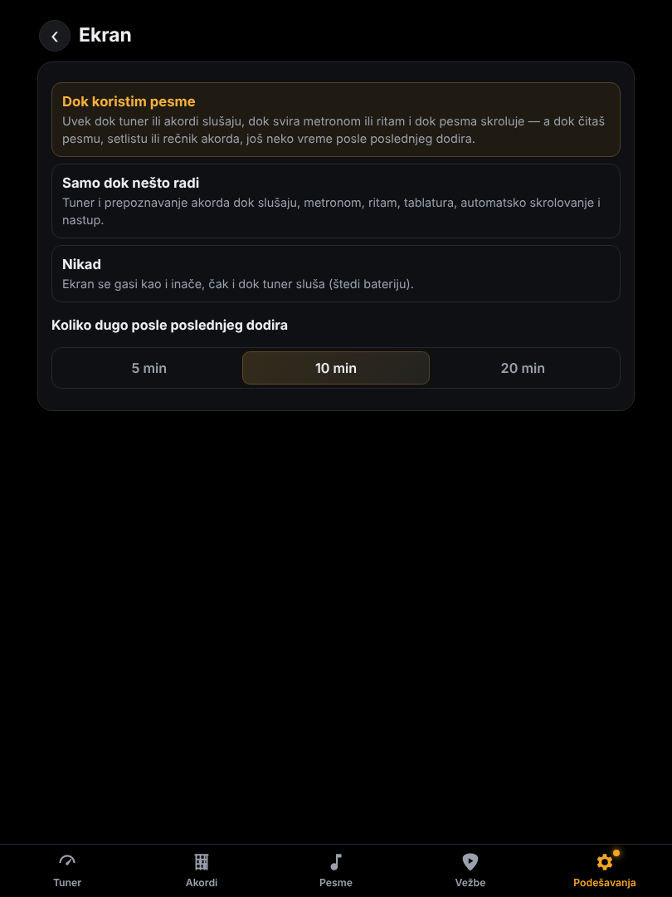
Čistiji zvuk akorda
Cleaner chord sound
Odjek sobe je kraći i lakši, a zvuk malo tiši — telefon ima manje posla, pa akord ne „pucketa“ dok zvuči.
The room echo is shorter and lighter, and the sound slightly quieter — the phone has less work, so a ringing chord doesn’t crackle.
Nastava u rezervnoj kopiji
Teaching in backups
Kopija sada čuva i oznake na pesmama i snimcima (za kog učenika je snimak, šta je od nastavnika), pa vraćanje vraća sve: učenike, planove, zahteve, vezu sa nastavnikom i štiklirane zadatke. Dnevna kopija se pravi samo u mirnom trenutku — nikad tokom igre, snimanja ili sviranja pesme.
Backups now also keep the labels on songs and recordings (which student a recording is for, what came from the teacher), so restoring brings everything back: students, plans, requests, the teacher connection and ticked tasks. The daily backup runs only at a calm moment — never during a game, recording or song playback.
1.85 Rezervna kopija svaki danA backup every day 9. 11. 2026.
Sinhronizacija drži sve uređaje istim, ali ako nešto slučajno obrišeš, obriše se svuda. Zato MARLI sada jednom dnevno sam sačuva celu aplikaciju (pesme, set liste, Vežbe, podešavanja) na tvoj Google Drive — samo ako se nešto promenilo, bez ikakvog prozora. Čuva se poslednjih 7 dana i po jedna kopija za 4 nedelje pre toga.
Sync keeps all devices the same, but if you delete something by accident, it’s deleted everywhere. So MARLI now saves the whole app (songs, set lists, Practice, settings) to your Google Drive once a day, by itself — only if something changed, with no window. It keeps the last 7 days and one copy for each of the 4 weeks before that.
Vrati sve nudi izbor: danas, juče, ili neki od ranijih dana. Isključuje se u Podešavanja → Rezervne kopije → „Automatski svaki dan“.
Restore all offers a choice: today, yesterday or an earlier day. Turn it off in Settings → Backups → “Automatically every day”.
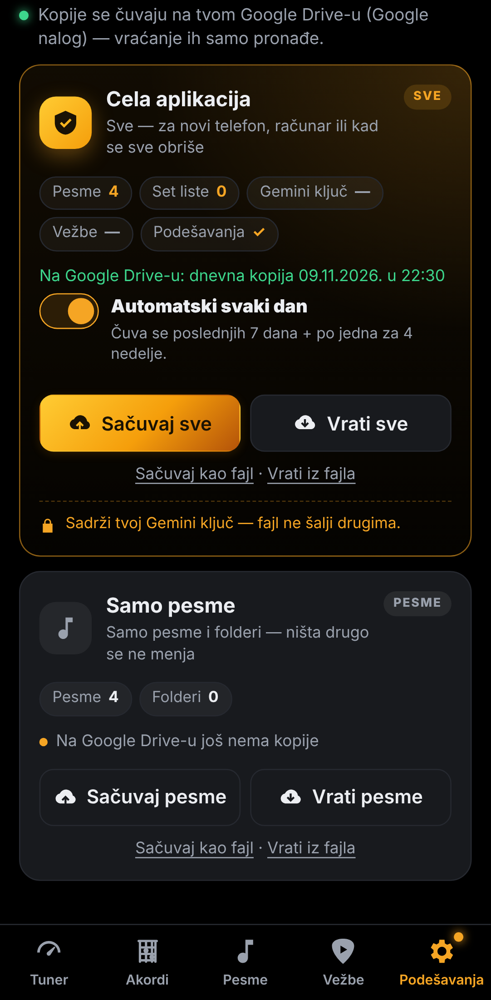
1.84 Napredak porukom i dečji naloziProgress by message and children’s accounts 9. 11. 2026.
Napredak porukom — bez Google naloga
Progress by message — no Google account
Kad učenik uključi „Deli napredak“, bira: automatski (preko svog Google naloga, nastavnik vidi sam) ili porukom — jednim dodirom šalje brojeve ove nedelje (vreme, dani zaredom, igre, pesme, zadaci), kroz svoju aplikaciju za poruke. Vežbe ga podsete jednom nedeljno. Nastavnik otvori link i vidi isti pregled, sa oznakom „poslato porukom“.
When a student turns on “Share progress”, they choose: automatically (through their Google account, the teacher sees it by itself) or by message — this week’s numbers (time, days in a row, games, songs, tasks) in one tap, through their messaging app. Practice reminds them once a week. The teacher opens the link and sees the same overview, marked “sent by message”.
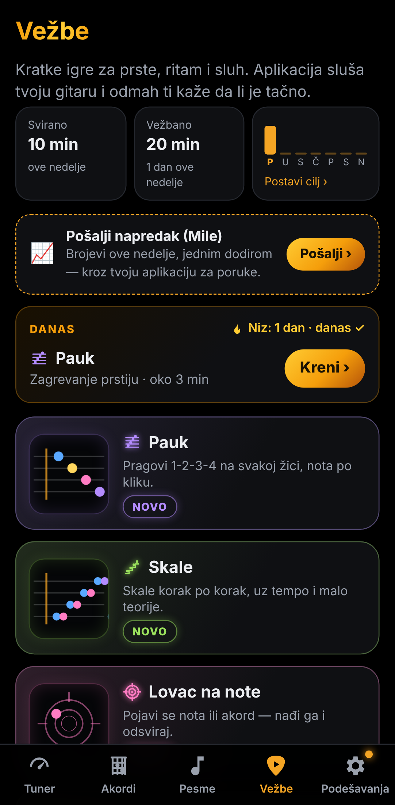
Dečji Google nalozi
Children’s Google accounts
Kod dece (Family Link) Google traži roditelja, a ponekad ni posle odobrenja ne pusti aplikaciju do Drive-a. MARLI više ne čeka zauvek: ponudi Pokušaj ponovo ili Pošalji porukom, a veza sa nastavnikom ostaje. Pesme, set liste i zadaci od nastavnika i dalje stižu bez ikakve prijave.
For children (Family Link), Google asks a parent, and sometimes even after approval it doesn’t let the app reach Drive. MARLI no longer waits forever: it offers Try again or Send by message, and the teacher connection stays. Songs, set lists and tasks from the teacher still arrive without any sign-in.
1.83 Zadaci i plan učenja od nastavnikaTasks and a learning plan from your teacher 9. 11. 2026.
Predloži vežbu
Suggest practice
Na stranici učenika → + Predloži vežbu: igra (npr. Promena akorda G ⇄ C), deo pesme, korak iz Skala ili nova pesma, sa ciljem (runde, rezultat ili minuti) i kratkom porukom. Link do zadataka šalješ samo jednom — posle toga svaki nov zadatak stiže sam.
On a student’s page → + Suggest practice: a game (e.g. Chord switch G ⇄ C), a song part, a Scales step or a new song, with a goal (rounds, score or minutes) and a short message. You send the tasks link only once — after that every new task arrives by itself.
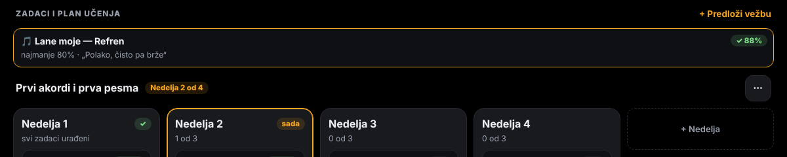
Kod učenika
For the student
Zadaci su na vrhu Vežbi, sa dugmetom Vežbaj koje otvara tačno tu vežbu. Zadatak se sam štiklira kad se odigraju runde (broji se tek od kad je zadatak stigao). Ceo plan je u „Od nastavnika“.
Tasks are at the top of Practice, with a Practice button that opens exactly that exercise. A task ticks itself once the rounds are played (counting starts when the task arrives). The whole plan is in “From your teacher”.
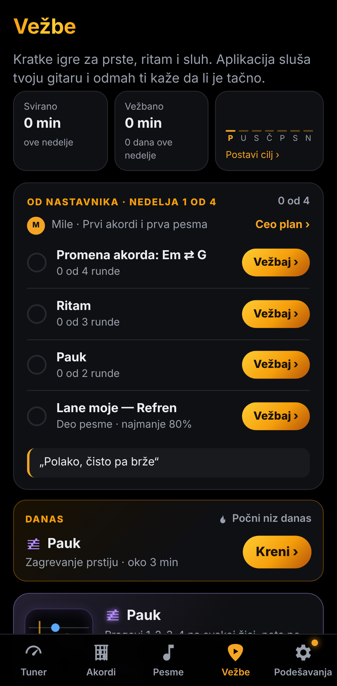
Plan po nedeljama
A plan by weeks
Počni od gotovog plana (Prvi akordi i prva pesma, Ritam i trzanje, Prsti i skale) ili od praznog, pa ga sačuvaj kao svoj šablon za druge učenike. Sledeća nedelja se otvara kad su svi zadaci urađeni ili kad je označiš na času. Ako učenik deli napredak, vidiš šta je urađeno.
Start from a ready-made plan (First chords and first song, Rhythm and strumming, Fingers and scales) or an empty one, then save it as your own template for other students. The next week opens when all tasks are done or when you mark it at the lesson. If the student shares progress, you see what’s done.
Zadaci su u malom fajlu na nastavnikovom Google Drive-u — bez imena učenika i bez biblioteke.
Tasks live in a small file on the teacher’s Google Drive — without the student’s name or library.
1.82 Lakše uređivanje pesama (računar)Easier song editing (computer) 9. 11. 2026.
Brza izmena na samoj pesmi
Quick fixes right on the song
Klikni akord i upiši novi (ili izaberi: prvo akordi iz pesme, pa uobičajeni u tonalitetu); ◀ ▶ ga pomeraju, kanta uklanja. Iznad teksta se pojavi „+“ za nov akord, a dvoklik na red menja tekst. Sve se čuva odmah, Ctrl+Z poništava; i kad je pesma transponovana, akord se upiše tačno.
Click a chord and type a new one (or pick: song chords first, then common chords in the key); ◀ ▶ move it, the bin removes it. Above the lyrics a “+” appears for a new chord, and double-click a line to edit the words. Saved right away, Ctrl+Z undoes; even in a transposed song the chord is stored correctly.
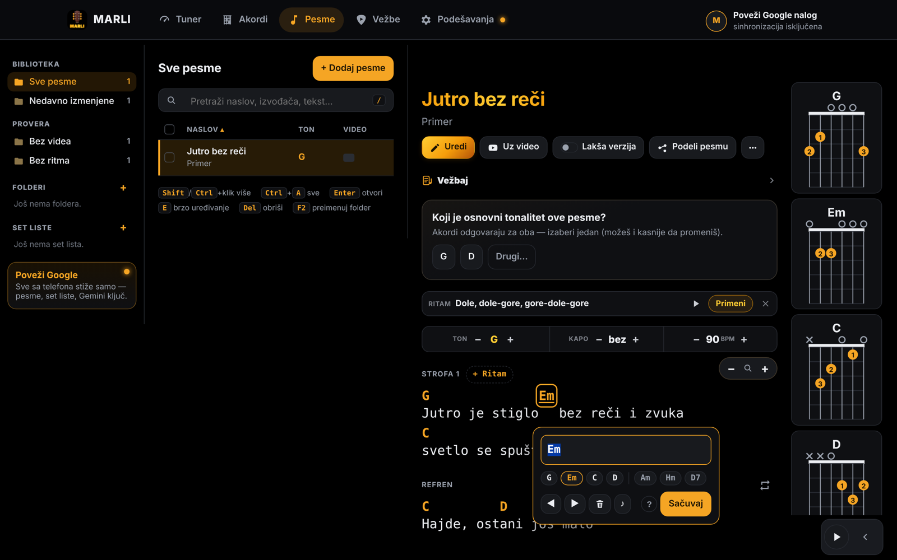
Uređivač: tekst i pregled
Editor: text and preview
Tekst levo, pesma kako će izgledati desno (osvežava se dok kucaš). Alati: + Sekcija, Transponuj, Pronađi i zameni (Ctrl+H), poništi/ponovi. Ctrl+S čuva, a nesačuvane izmene se pamte ako slučajno izađeš. Umesto „⋯“ je traka Uredi · Uz video · Lakša verzija · Podeli, a desni klik na pesmu u spisku otvara meni (i Ctrl+D pravi kopiju).
Text on the left, the song as it will look on the right (updates while you type). Tools: + Section, Transpose, Find and replace (Ctrl+H), undo/redo. Ctrl+S saves, and unsaved changes are kept if you leave by accident. Instead of “⋯” there’s a bar Edit · Play-along · Easier version · Share, and right-click a song in the list for a menu (Ctrl+D makes a copy).
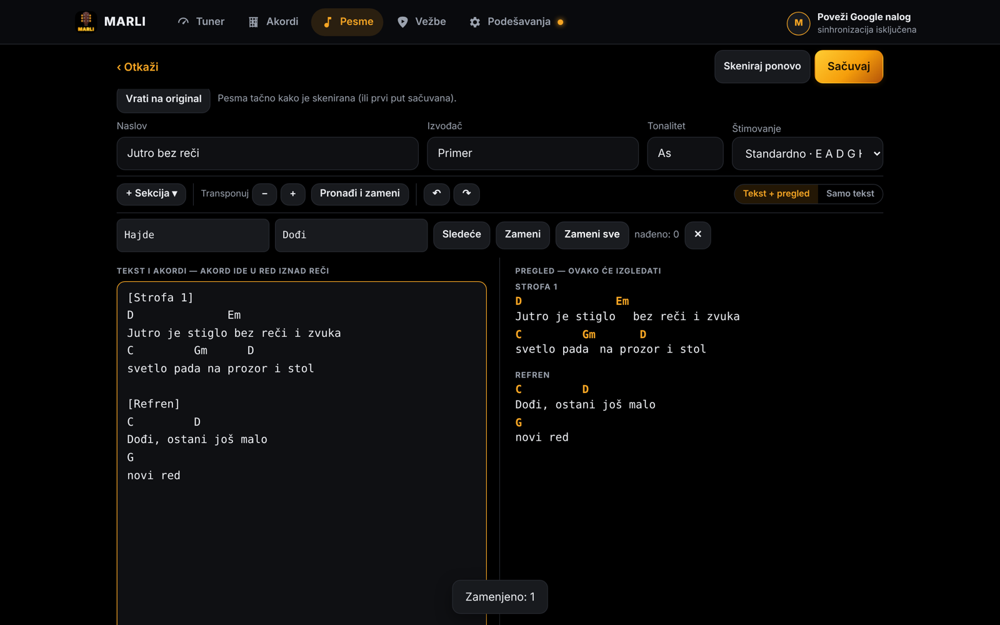
Telefon i tablet ostaju isti.
Phones and tablets stay the same.
1.81 Učenici kao prva karticaStudents as the first tab 9. 11. 2026.
Na računaru, kad je uključeno „Ja sam nastavnik“, Učenici su prva kartica u meniju gore, sa brojem otvorenih zahteva. Ostali korisnici i telefon ostaju isti (na telefonu su Učenici u Pesmama).
On computers, with “I’m a teacher” on, Students is the first tab in the top menu, with the number of open requests. Other users and phones stay the same (on phones Students are under Songs).
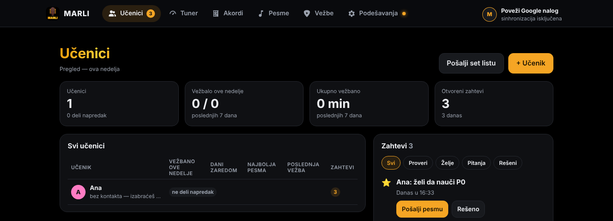
1.80 Napredak i „Proveri pesmu“Progress and “Check a song” 9. 11. 2026.
Deli napredak sa nastavnikom
Share progress with your teacher
Kad prihvatiš pozivnicu (ili kasnije u „Od nastavnika“) možeš da uključiš „Deli napredak“ — podrazumevano je isključeno. Nastavnik vidi samo brojeve: koliko si vežbao/la ove nedelje, dane zaredom, igre i pesme iz „Delova pesme“ sa rezultatom. Na istom mestu vidiš tačno ono što on vidi. Isključi i fajl se briše.
When you accept the invite (or later in “From teacher”) you can turn on “Share progress” — it’s off by default. Your teacher sees numbers only: practice time this week, days in a row, games and Song parts songs with scores. In the same place you see exactly what they see. Turn it off and the file is deleted.
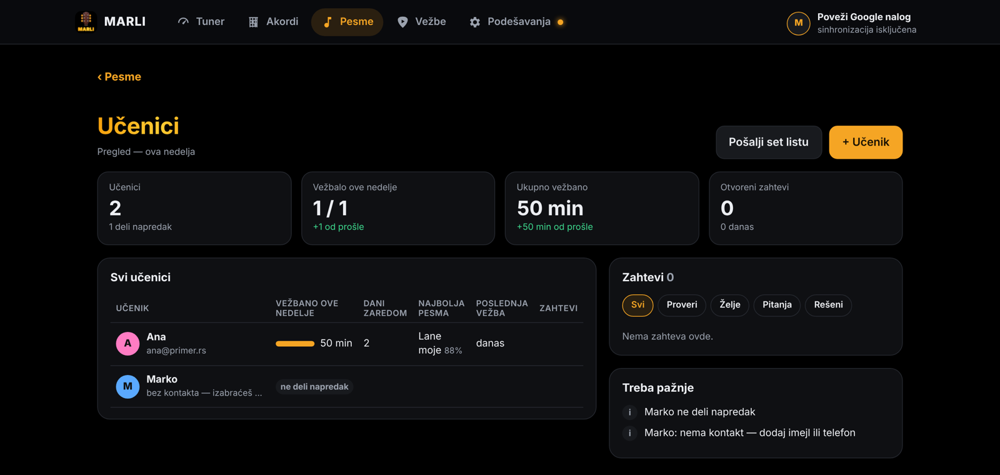
Proveri sa nastavnikom
Check with teacher
U ⋯ svake pesme: „Proveri sa nastavnikom“ (uz napomenu, npr. „nisam siguran za refren“). Nastavnik bira: Ispravi i vrati, Pošalji moju verziju, Sačuvaj kopiju ili U redu je. Kad stigne ispravka, vidiš izmene i biraš Zameni moju ili Zadrži obe — stara verzija ostaje u ⋯ → Prethodne verzije.
In every song’s ⋯: “Check with teacher” (with a note, e.g. “not sure about the chorus”). Your teacher chooses: Correct and send back, Send my version, Keep a copy or It’s fine. When a correction arrives you see the changes and choose Replace mine or Keep both — the old version stays in ⋯ → Previous versions.
🔒 Samo brojevi i samo pesma koju sam pošalješ. Ništa se ne šalje bez tvoje potvrde.
🔒 Numbers only, and only the song you send yourself. Nothing is sent without your confirmation.
1.79 Zahtevi i pregled za nastavnikaRequests and teacher overview 9. 11. 2026.
Za učenike: Pitaj nastavnika
For students: Ask your teacher
U „Od nastavnika“ su dva dugmeta: „Želim da naučim…“ i „Imaš li ovu pesmu?“. Upišeš naslov (izvođač i napomena nisu obavezni) i poruka ide nastavniku tvojom aplikacijom. U „Moji zahtevi“ vidiš stanje: poslato, stiglo ✓ (kad ti nastavnik pošalje pesmu) ili „nema je“.
In “From teacher” there are two buttons: “I want to learn…” and “Do you have this song?”. Enter the title (artist and note are optional) and the message goes to your teacher through your own app. “My requests” shows the status: sent, arrived ✓ (when the teacher sends the song) or “not available”.
Za nastavnike: pregled
For teachers: overview
Na računaru i velikom tabletu Učenici su pregled: koliko učenika i otvorenih zahteva, šta je poslato i stiglo ove nedelje, tabela svih učenika i lista zahteva. Pošalji pesmu otvara izbor sa već upisanim naslovom, Nemam javlja učeniku, Rešeno zatvara zahtev. „Treba pažnje“ ističe otvorene zahteve, tihe učenike i one bez kontakta. Na telefonu su zahtevi na stranici učenika.
On computers and large tablets Students is an overview: number of students and open requests, what was sent and received this week, a table of all students and the request list. Send song opens the picker with the title already filled in, Don’t have it tells the student, Done closes the request. “Needs attention” highlights open requests, quiet students and those without a contact. On phones requests are on the student’s page.

🔒 Pregled pokazuje samo ono što nastavnik već ima. Napredak u vežbanju (samo uz dozvolu učenika) stiže u sledećoj verziji.
🔒 The overview shows only what the teacher already has. Practice progress (only with the student’s permission) arrives in the next version.
1.78 Nastava: učeniciTeaching: students 9. 11. 2026.
Za nastavnike
For teachers
Podešavanja → Nastava → „Ja sam nastavnik“ (podrazumevano isključeno). Dodaj učenika (ime, po želji imejl ili telefon) i pošalji mu pozivnicu — otvara se tvoja aplikacija za poruke sa gotovim tekstom. Svaki učenik ima svoju stranicu sa set listama i snimcima. Posle snimanja u „Samo sviraj“ aplikacija pita „Za koga je snimak?“ (pamti poslednjeg). Set listu možeš dodeliti i poslati jednom ili više učenika — svako dobija svoju poruku, učenici ne vide jedni druge.
Settings → Teaching → “I’m a teacher” (off by default). Add a student (name, optionally email or phone) and send an invite — your messaging app opens with a ready text. Each student has a page with setlists and recordings. After recording in “Just play” the app asks “Who is this recording for?” (it remembers the last one). You can assign and send a setlist to one or more students — each gets their own message; students don’t see each other.

Za učenike
For students
Prihvati pozivnicu, pa je sve od nastavnika u „Od nastavnika“; kad nastavnik pošalje izmenjenu set listu, tvoja se samo osveži (bez duplikata). Snimak mu šalješ dugmetom „Pošalji nastavniku“ — kod njega odmah ide pod tvoje ime. Vezu možeš da prekineš kad hoćeš.
Accept the invite, and everything from your teacher is in “From teacher”; when the teacher sends an updated setlist, yours just updates (no duplicates). Send a recording with “Send to teacher” — it goes straight under your name on their side. You can disconnect any time.
🔒 Biblioteke se nikad ne dele; razmenjuje se samo ono što neko namerno pošalje. Podaci o učenicima ostaju samo kod nastavnika. MARLI sam nikome ne šalje poruke.
🔒 Libraries are never shared; only what someone deliberately sends is exchanged. Student data stays only with the teacher. MARLI itself never sends messages to anyone.
1.77 Nov izgled na računaruNew look on computers 9. 11. 2026.
Meni gore, širi sadržaj
Menu at the top, wider content
Na računaru je meni sada gore: logo levo, stranice u sredini, a desno tvoj Google nalog i stanje sinhronizacije (dodir otvara podešavanja naloga). Vežbe: „Danas“ je veliki blok, pored njega nedelja, a igre su velike pločice sa pregledom. Podešavanje igre je u dve kolone, a Počni je uvek na dnu ekrana, uz kratak pregled izabranog (npr. „Em – G · Na 2 otkucaja · Normalno · 60 BPM“). Na telefonu se ništa ne menja.
On a computer the menu is now at the top: logo on the left, pages in the middle, and on the right your Google account and sync status (tap to open account settings). Practice: “Today” is a big block with the week next to it, and games are large tiles with a preview. Game setup is in two columns, and Start is always at the bottom of the screen with a short summary of your choices (e.g. “Em – G · Every 2 beats · Normal · 60 BPM”). Nothing changes on phones.
1.76 Pošalji utisakSend feedback 9. 11. 2026.
Javi mi šta misliš
Tell me what you think
Podešavanja → Pošalji utisak: izaberi Nešto ne radi, Ideja ili Sviđa mi se i napiši par reči. Uz poruku ide tvoj imejl (da mogu da ti odgovorim) i — ako ih ne isključiš — dijagnostika: ekran, verzija, uređaj i izveštaj o greškama. Bez pesama i ključeva. Bez mreže poruka sačeka i pošalje se sama.
Settings → Send feedback: pick Something’s wrong, Idea or I like it and write a few words. Your email goes with it (so I can reply) and — unless you turn them off — diagnostics: screen, version, device and an error report. No songs or keys. Offline, the message waits and is sent by itself.

Pošalji dijagnostiku
Send diagnostics
Ako se nešto zaglavi: Podešavanja → Dijagnostika → Pošalji dijagnostiku — jedan dodir umesto kopiranja izveštaja.
If something gets stuck: Settings → Diagnostics → Send diagnostics — one tap instead of copying the report.
Retko — najviše dva puta, ikad — aplikacija posle vežbe pita „Kako ti se čini…?“ sa 👍 / 👎.
Rarely — at most twice, ever — the app asks “How do you like…?” after practice, with 👍 / 👎.
1.75 Ime akorda na linijiChord name on the line 9. 11. 2026.
Uvek znaš koji akord sviraš
Always know which chord you play
U Promeni akorda, Delovima pesme i Ritmu (nivoi sa akordima) na vrhu vrata, tačno iznad žute linije, stoji ime akorda koji sviraš. Otkucaj pre promene pored njega se pojavi i sledeći (Em › G) — da se pripremiš na vreme. Brojevi i boje prstiju u blokovima ostaju kao pre. Pauk i Skale su bez promene.
In Chord switch, Song parts and Rhythm (levels with chords) the chord you play is named at the top of the neck, right above the yellow line. One beat before a change the next one appears next to it (Em › G) — so you get ready in time. Finger numbers and colors in the blocks stay as before. Spider and Scales are unchanged.

1.74 Dobrodošao nazad — jedna prijavaWelcome back — one sign-in 8. 11. 2026.
Nov telefon, računar ili obrisani podaci
New phone, computer or cleared data
Aplikacija odmah pita: Poveži Google nalog ili Prvi put sam ovde. Jedna prijava vraća sve — pesme, set liste, foldere, podešavanja, Vežbe i statistiku i Gemini ključ. Zatim sama pretraži tvoj Google Drive: ako postoji rezervna kopija novija od onoga što je stiglo (ili sinhronizacija nema ništa), ponudi je sa datumom („pre 2 h“) — jedan dodir i vraćena je. Kopije se uvek čuvaju u isti fajl, pa se Drive ne puni.
The app asks right away: Connect Google account or I’m new here. One sign-in brings everything back — songs, setlists, folders, settings, Practice and stats, and your Gemini key. Then it searches your Google Drive by itself: if there’s a backup newer than what arrived (or sync has nothing), it offers it with its age (“2 h ago”) — one tap and it’s restored. Backups always go into the same file, so Drive doesn’t fill up.

1.73 Koliko sviraš i vežbašHow much you play and practice 8. 11. 2026.
Vežbe: ova nedelja i moje pesme
Practice: this week and my songs
- Ova nedelja: koliko si svirao i vežbao (i u odnosu na prošlu nedelju), stubići po danu. Po želji nedeljni cilj — krug se puni.
- Moje pesme: za svaku pesmu svirano, koliko puta, vežbano i najbolji rezultat; poslednje svirane prve.
- Dugo nisi svirao: pesme koje nisi svirao više od mesec dana.
- Računa se samo aktivno vreme (dodir, skrol, Pusti, Uz video, runde vežbe) — pesma ostavljena otvorena ne broji sate. Telefon i računar se sabiraju preko sinhronizacije; sve je i u rezervnoj kopiji „Cela aplikacija“.
- This week: how much you played and practiced (compared with last week), bars per day. Optional weekly goal — the ring fills up.
- My songs: for each song played time, how many times, practiced time and best score; most recent first.
- Not played in a while: songs you haven’t played for over a month.
- Only active time counts (touch, scroll, Play, Play along, practice rounds) — a song left open doesn’t count hours. Phone and computer add up through sync; it’s all in the “Whole app” backup too.

Sve o pesmi, spremnost set liste
Everything about a song, setlist readiness
Dodir na pesmu (u Vežbama ili red „Svirano · Vežbano“ na samoj pesmi): ukupno svirano i vežbano, delovi pesme i napredak tempa (npr. 80 → 100 BPM, cilj 112), pa „Vežbaj“ najslabiji deo. Na set listi: Spremno 6 od 9 i tačka uz svaku pesmu (zeleno spremna, zlatno u radu, sivo nevežbana).
Tap a song (in Practice, or the “Played · Practiced” line on the song itself): total played and practiced, the song’s parts and tempo progress (e.g. 80 → 100 BPM, target 112), then “Practice” the weakest part. On a setlist: Ready 6 of 9 and a dot next to each song (green ready, gold in progress, grey not practiced).


Nova ikonica na telefonu
The new icon on your phone
Ikonice imaju nova imena fajlova i aplikacija ima stalan identitet, pa ih Android i računar lakše prepoznaju kao promenu. Telefon menja ikonicu sam, obično za dan-dva. Ništa ne treba brisati ni ponovo instalirati.
The icons have new file names and the app has a fixed identity, so Android and computers pick up the change more easily. The phone updates the icon by itself, usually within a day or two. Nothing needs to be removed or reinstalled.
1.72 Nova PodešavanjaNew Settings 8. 11. 2026.
Kratak spisak, svaka celina svoja stranica
A short list, each section its own page
Na vrhu je stanje na jedan pogled: Google nalog, sinhronizacija, rezervna kopija i Gemini ključ. Ispod su grupe Sviranje, Aplikacija, Podaci i Više — sa ikonicama i trenutnom vrednošću desno (npr. „Standardno · 440“). Dodir otvara stranicu, ‹ ili dugme „nazad“ na telefonu vraća na spisak.
At the top: status at a glance — Google account, sync, backup and Gemini key. Below: Playing, App, Data and More — with icons and the current value on the right (e.g. “Standard · 440”). Tap to open a page; ‹ or the phone’s back button returns to the list.

Na računaru: spisak levo, otvorena stranica desno.
On a computer: list on the left, the open page on the right.

Gemini ključ se sklopi kad radi
The Gemini key folds away when it works
- Ključ radi — samo jedan red (…poslednja 4 znaka, kada je proveren) i dugmad Proveri / Promeni. Model, prenos na uređaje i brisanje su pod „Napredno“.
- Dnevni limit / Google zauzet — narandžasto, ostaje sklopljeno: ništa ne treba da radiš.
- Nema ključa ili ne radi — tek tada sve otvoreno: vraćanje sa Google naloga, polje i kratki koraci.
- Key works — just one line (…last 4 characters, when it was checked) and Check / Change. Model, sending to devices and delete are under “Advanced”.
- Daily limit / Google busy — orange, stays folded: nothing to do.
- No key or not working — only then everything is open: restore from Google account, the field and short steps.

1.71 Rezervne kopije — jednostavnoBackups — simple 8. 11. 2026.
Dve kopije, dva dugmeta svaka
Two backups, two buttons each
Podešavanja → Rezervne kopije. Sinhronizacija drži uređaje usklađenim; rezervna kopija je snimak jednog trenutka za vraćanje kad nešto pođe naopako.
Settings → Backups. Sync keeps your devices matched; a backup is a snapshot of one moment for when something goes wrong.
- Cela aplikacija — sve: pesme, set liste, folderi, sva podešavanja, Gemini ključ, napredak i rezultati iz Vežbi, Skale, ritmovi, snimci. „Vrati celu aplikaciju“ zamenjuje sve kopijom. Ovaj fajl ne šalji drugima.
- Samo pesme — pesme i njihovi folderi. „Vrati pesme“ ne dira ništa drugo: Dodaj nove vraća pesme koje fale (i ranije obrisane), Zameni sve pesme ostavlja samo one iz kopije.
- Ništa ne biraš: „Sačuvaj“ i „Vrati“ same nađu kopiju na tvom Google Drive-u (ako nalog nije povezan, prvo ga povežu) i pre vraćanja pokažu šta je u njoj. Isto na telefonu i na računaru.
- Fajl na uređaju je dodatna mogućnost: „Sačuvaj kao fajl“ / „Vrati iz fajla“. Stare kopije i dalje mogu da se vrate.
- Whole app — everything: songs, setlists, folders, all settings, Gemini key, Practice progress and scores, Scales, rhythms, recordings. “Restore the whole app” replaces everything with the backup. Do not send this file to others.
- Songs only — songs and their folders. “Restore songs” touches nothing else: Add new brings back missing songs (deleted ones too), Replace all songs keeps only the ones in the backup.
- Nothing to pick: “Back up” and “Restore” find the backup on your Google Drive by themselves (connecting the account first if needed) and show what’s inside before restoring. Same on phone and computer.
- A file on the device is an extra option: “Save as a file” / “Restore from a file”. Older backups can still be restored.

- Gemini ključ nestao? Vrati ključ sa Google naloga — jedan dodir u kartici Gemini ključ.
- Proveri ključ kaže šta je: dnevni besplatni limit (i kada stiže nov), Google zauzet ili loš ključ.
- MARLI uvod samo kad se aplikacija otvori — ne pri povlačenju nadole.
- Model „Automatski“ i „Prenesi ključ na moje uređaje“ uključeni podrazumevano.
- Gemini key gone? Restore key from Google account — one tap in the Gemini key card.
- Check key tells you what it is: daily free limit (and when it resets), Google busy, or a bad key.
- The MARLI intro only on opening the app — not on pull-to-refresh.
- “Automatic” model and “Send key to my devices” on by default.
1.70 MARLI na računaruMARLI on your computer 8. 11. 2026.
Poveži isti Google nalog — sve stiže samo
Connect the same Google account — everything arrives by itself
Na računaru otvori aplikaciju i poveži isti Google nalog kao na telefonu. Pesme, set liste, podešavanja i Gemini ključ stižu sami i ostaju usklađeni.
Open the app on your computer and connect the same Google account as on your phone. Songs, setlists, settings and your Gemini key arrive by themselves and stay in sync.
- Na računaru otvori bagaljivko.github.io/Gitara (Chrome ili Edge).
- Klikni Poveži Google nalog (pojavi se sam, ili dole levo).
- Sačekaj „Sve je stiglo ✓“.
- On your computer open bagaljivko.github.io/Gitara (Chrome or Edge).
- Click Connect Google account (it appears by itself, or bottom left).
- Wait for “Everything is here ✓”.

Biblioteka na računaru
Library on your computer
Na širokom ekranu „Pesme“ postaje upravljač biblioteke: levo folderi i set liste, u sredini tabela, desno otvorena pesma.
On a wide screen “Songs” becomes a library manager: folders and setlists on the left, a table in the middle, the open song on the right.
- Shift/Ctrl + klik — više pesama; traka sa radnjama: premesti u folder, dodaj u set listu, nova set lista od izabranih, promeni ton, obriši.
- Prevuci pesme na folder ili set listu levo.
- E — brzo uređivanje (naslov, izvođač, kapo, BPM, YouTube link, folderi).
- F2 ili dupli klik — preimenuj folder; desni klik — meni.
- Provera: „Bez videa“, „Bez ritma“, „Mogući duplikati“.
- Shift/Ctrl + click — many songs; action bar: move to folder, add to setlist, new setlist from selection, change key, delete.
- Drag songs onto a folder or setlist on the left.
- E — quick edit (title, artist, capo, BPM, YouTube link, folders).
- F2 or double click — rename a folder; right click — menu.
- Check: “No video”, “No rhythm”, “Possible duplicates”.


Više PDF-ova odjednom
Many PDFs at once
Prevuci ili izaberi više PDF-ova. PDF sa pravim tekstom postaje pesma odmah, bez AI. Skenirani PDF ide preko besplatnog Gemini-ja — pre početka vidiš koliko; ako se dnevni limit potroši, ostatak čeka i nastavlja se sam (najkasnije sutra).
Drag in or choose several PDFs. A PDF with real text becomes a song right away, no AI. Scanned PDFs go through free Gemini — you see how many before starting; if the daily limit runs out, the rest wait and continue by themselves (tomorrow at the latest).

Dobrodošao nazad — oporavak posle brisanja podataka
Welcome back — recovery after clearing data
Ako se podaci pregledača obrišu (ili je telefon nov), aplikacija nudi „Dobrodošao nazad?“: poveži isti Google nalog i sve se vraća — i Gemini ključ. „Vrati rezervnu kopiju“ prvo sama traži kopiju na Google Drive-u.
If the browser data is cleared (or the phone is new), the app offers “Welcome back?”: connect the same Google account and everything comes back — including the Gemini key. “Restore a backup” first looks for the backup on Google Drive by itself.

- Povezivanje Google naloga uključuje sinhronizaciju na svakom uređaju (isključuje se u Podešavanjima).
- Na telefonu: „MARLI i na računaru“ u Podešavanjima i u „Podeli MARLI“.
- „Šta je novo“ u Podešavanja → O aplikaciji (zlatna tačka posle ažuriranja).
- Set lista: Alt+↑/↓ pomera pesmu, Del je izbacuje.
- Connecting your Google account turns on sync on every device (you can turn it off in Settings).
- On the phone: “MARLI on your computer too” in Settings and in “Share MARLI”.
- “What's new” in Settings → About (gold dot after an update).
- Setlist: Alt+↑/↓ moves a song, Del removes it.

1.69 Gitara je sada MARLIGitara is now MARLI
Novo ime, nova ikonica (glava gitare iz tunera) i uvodna animacija. Adresa, pesme i podešavanja su ostali isti.
New name, new icon (the headstock from the tuner) and intro. The address, songs and settings stay the same.
Ništa ne treba brisati ni ponovo instalirati — aplikacija se ažurira sama.
Nothing needs to be removed or reinstalled — the app updates by itself.